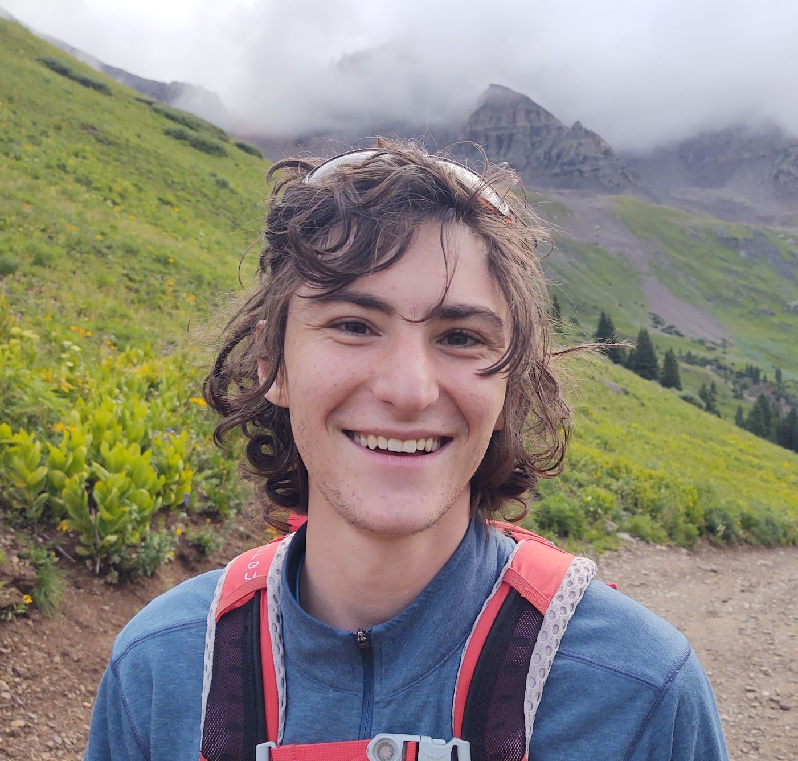

About Me
Boland Unfug is a Computer Science major with a deep love for problem solving, personal growth, new
experiences.
Boland has spent the last 5 years improving both his programming skills as well as life habits.


"talk is cheap. Show me the code."
Summer 2022 - Present
Ouray Hotsprings Lifeguard
I had the opportunity to work at the local hotsprings, where I became lifeguard and cpr certified.
I also gained valuable skills involving teamwork and communication, and an overall better understanding of work environments.
Summer 2018 - Summer 2019
Minecraft Server CoHost
My interest in minecraft led me to create a minecraft server from scratch with a friend of mine.
I assisted with hosting, moderation, development, and building, which gave me a wide range of skills.
This includes an understanding of online server management, online conflict moderation, and minecraft mod development.
Summer 2020 - Winter 2020
Coding with Kids Teacher
Using my skills in mod development, I turned to teaching others how to code through fun minecraft modifications.
I taught a wide variety of ages, from kindergarten to 8th grade.
Running a classroom improved my listening skills, patience, and my ability to communicate larger ideas.
June 2017 - June 2018
Denver Public Library Volunteer
My first real job involved me planning and managing two events at my local library, Wednsday art club and Friday Game night.
I was put in charge of the art club, planning out projects, organizing supplies, and entertaining participants.
2020 - Present
New College of Florida
This is my primary university, where I am working towards a degree in computer science.
NCF being a liberal arts college provides me a unique perspective and flexible skill toolbox, while its status as an honors college maintains a level of difficulty.
2018 - 2020
Community College of Denver
CEC allowed me to participate directly in college classes.
This allowed me to take several core classes in high school, allowing me to focus on computer science later.
- TODO
2022 - Present
London South Bank University
In order to broaden my horizons further, I decided to take a semester abroad.
Studying in London provided many new challenges, both in school and out.
It showed me new ways to live and learn, different cultures and beliefs, and taught me self - reliance.
2017 - 2020
CEC Early College
In search for a better school, I changed high schools between 9th and 10th grade.
CEC Early College provided a better, more fulfilling experience, while also allowing for early college enrollment.
This is where I really started to program, taking a two year video game design course in c++ and python development.